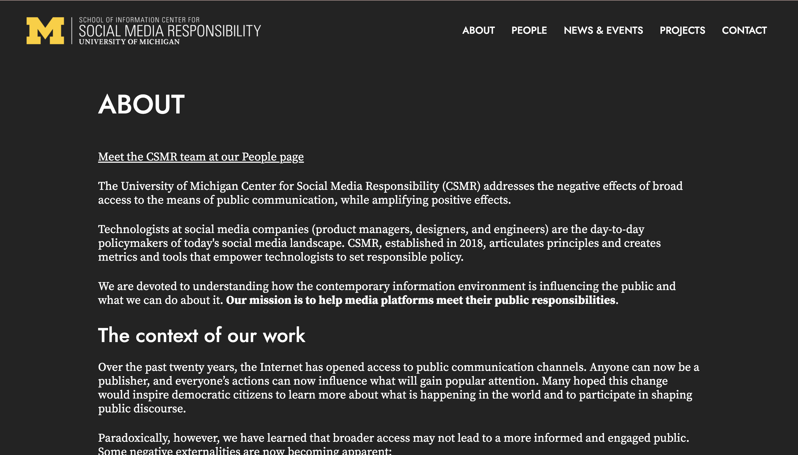

Project was completed over a six month period.
I was working as an interface designer along with Summer Nguyen, a fellow School of Information student. Along with designing the screens in Sketch, I was primarily responsible for finalizing the designs and starting the development of the new website.
Sketch, Zeplin, InVision, Google Meet, Slack
CSMR directors, Summer Nguyen, Hamza Baccouche, Erin Brynn
Social media often facilitates the spread of misinformation and harmful messages. This has been especially prevalent in recent years, and the Center for Social Media Responsibility is working to combat these issues. In order to effectively spread awareness about social media responsibility, they wanted to update their website to reflect their current mission.
The Center for Social Media Responsibility original website (shown below) was outdated and difficult to update with current events. The structure and design of the website was not helping CSMR to achieve their mission of holding social media platforms accountable for improving the quality of content and interactions online, so we wanted to design a more modern and adaptable website.
I joined the design team in October of 2019 after helping to conduct research with CSMR. My teammate, Summer, had designed the first mockups of the new website before I joined the design team; these are shown below.
After the first round of mockups, we decided to do some restructuring of the site and changed some of the pages in the navigation bar. What was originally the "Blog" became "News", because the blog was not frequently updated and was a misleading term for a page that was more focused on news. We had originally planned to maintain the light theme of the current website but eventually transitioned to a dark theme throughout the entire site to maintain consistency. After some discussion with the CSMR directors, we settled on a dark grey that portrayed a modern look but that wasn’t too dark to distract from the content of the site. Some of the final designs can be seen below.
 I was also responsible for preparing the designs for development. I imported our Sketch files into Zeplin and handed off our designs, along with the HTML and CSS elements from Zeplin, to the development team. The CSMR website is now live and can be seen at this link.I learned a lot while working on this project about different design and prototyping tools. My team used Sketch and InVision while designing these screens, and I used Zeplin eventually when turning the designs into CSS and HTML. It was interesting to play the role of both designer and developer in this project and I was able to learn what parts of the design process can be improved for easier handoff to developers. I'd like to give credit to my team member Summer for her great work on these designs, and also to the Center for Social Media Responsibility for their content and input on our designs.